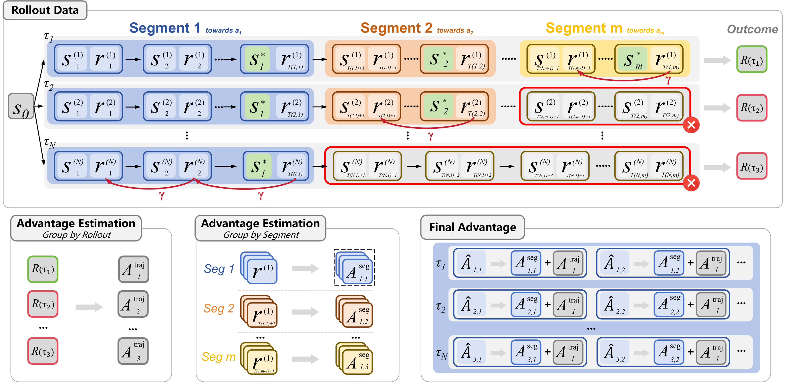
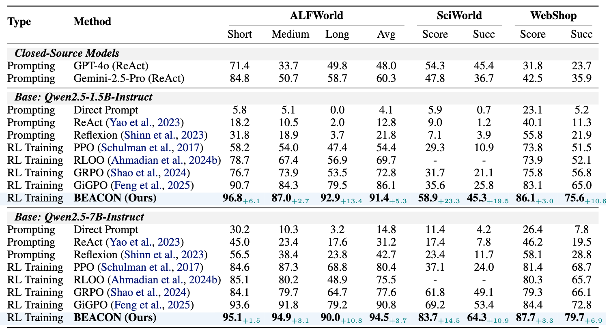

Citation will be available once the paper is posted.
While long-horizon agentic tasks require language agents to perform dozens of sequential decisions, training such agents with reinforcement learning remains challenging. We identify two root causes: credit misattribution, where correct early actions are penalized due to terminal failures, and sample inefficiency, where scarce successful trajectories result in near-total loss of learning signal.
We introduce a milestone-guided policy learning framework, BEACON, that leverages the compositional structure of long-horizon tasks to ensure precise credit assignment. BEACON partitions trajectories at milestone boundaries, applies temporal reward shaping within segments to credit partial progress, and estimates advantages at dual scales to prevent distant failures from corrupting the evaluation of local actions.
On ALFWorld, WebShop, and ScienceWorld, BEACON consistently outperforms GRPO and GiGPO. Notably, on long-horizon ALFWorld tasks, BEACON achieves 92.9% success rate, nearly doubling GRPO's 53.5%, while improving effective sample utilization from 23.7% to 82.0%. These results establish milestone-anchored credit assignment as an effective paradigm for training long-horizon language agents.

The BEACON framework. Top: trajectory partitioning at milestone boundaries with temporal reward decay (factor γ). Bottom: dual-scale advantage estimation combining trajectory-level and segment-level signals.
BEACON operates in three stages:
subgoal_completed directly.

BEACON outperforms GRPO and GiGPO across ALFWorld, ScienceWorld, and WebShop at both 1.5B and 7B scales, using a single set of hyperparameters across all benchmarks.
Citation will be available once the paper is posted.